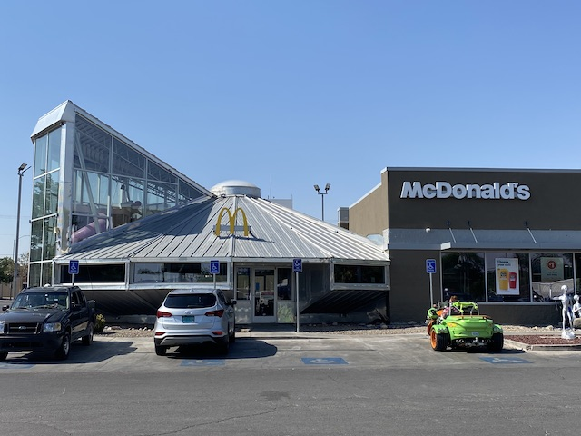
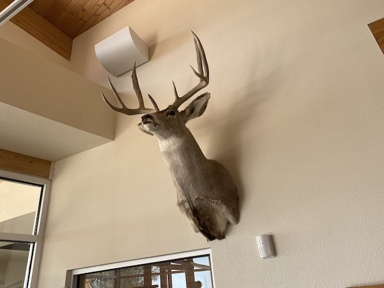
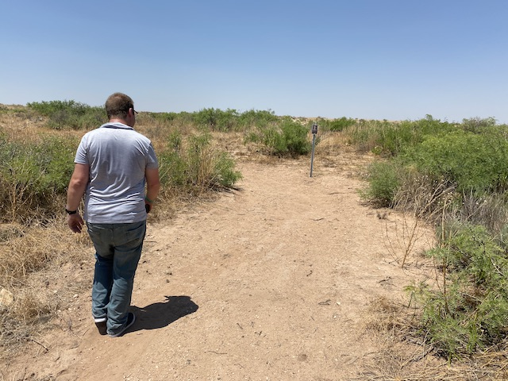
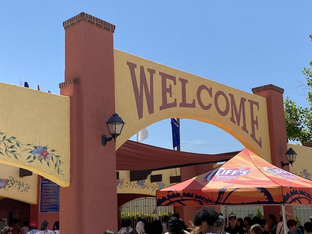
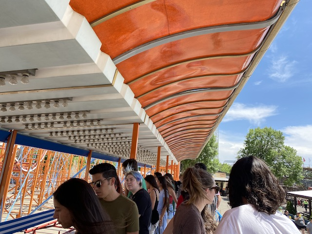
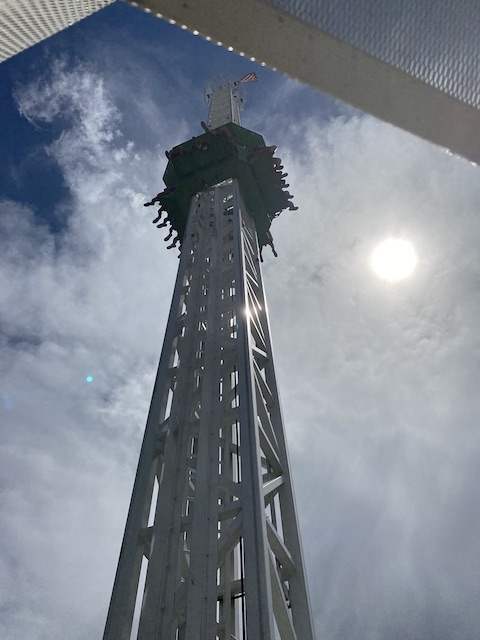
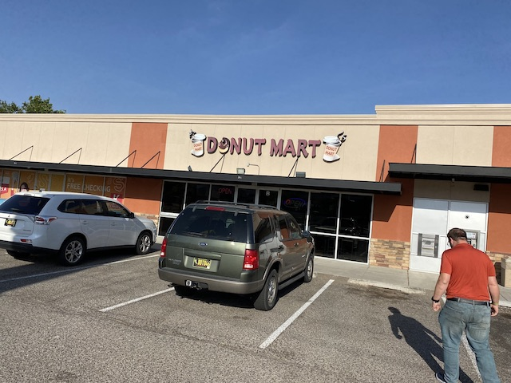
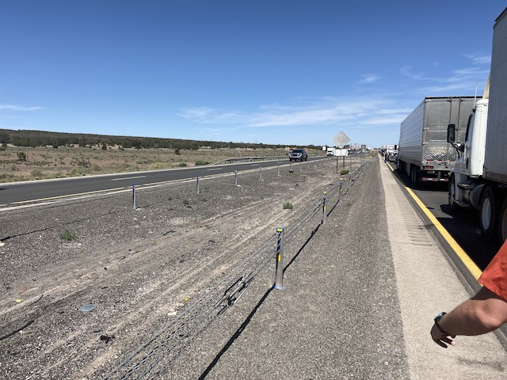

| |
New Mexico 2022
 All right. So time for our primary trip of 2022 (it wasn't initially planned that way, but the actual big trip was postponed due to money). We're off to New Mexico. So I had a bone to pick with New Mexico after getting f*cked out a certain theme park. But I didn't go since....New Mexico just wasn't that big of a priority. But when Jason also mentioned having an online friend for years in New Mexico he's wanted to meet for years, this is my perfect oppertunity to go back and finish business I failed to take care of 9 years ago. Oh, and also see Jason's friend. Stopping for lunch in Phoenix, and....HOLY CRAP!!! THERE'S A WHATABURGER!!!
All right. So time for our primary trip of 2022 (it wasn't initially planned that way, but the actual big trip was postponed due to money). We're off to New Mexico. So I had a bone to pick with New Mexico after getting f*cked out a certain theme park. But I didn't go since....New Mexico just wasn't that big of a priority. But when Jason also mentioned having an online friend for years in New Mexico he's wanted to meet for years, this is my perfect oppertunity to go back and finish business I failed to take care of 9 years ago. Oh, and also see Jason's friend. Stopping for lunch in Phoenix, and....HOLY CRAP!!! THERE'S A WHATABURGER!!!
So it's been 9 years since I last ate here. I remember liking it, but thinking it was overrated. Sorry Texans, but I still stand by that. In'N'Out > Whataburger easily. Honestly, the most exciting thing here, aside from getting to try a place I hadn't had in forever, was the Dr. Pepper Shake. That was really f*cking good.
GAH!!! I remember bitching about Sierra Blanca when we were doing the Texas/Rocky Mtn Road Trip. But I forgot about all the other stupid check-points around the Southwest. It is so frustrating to be stopped and interrogated more than going through customs into Canada, the EU Countries, and Japan. >=(
Yay! We made it to Roswell, New Mexico (No, this is not a detour. Jason's friend lives here).

You wanna do the cool UFO McDonalds for Breakfast?
So yeah. This is one of the few ultra-rare McDonalds that gets featured on many Most Unique McDonalds Lists. Granted, we're here primarily since....we're already here in Roswell. But it is kind of cool to be at the UFO McDonalds.
But while the design of the McDonalds is really cool and unique, the menu is still sadly the same. No Gran Garlic Pepper Burger here. =( (Hello Astronaut Ronald BTW)
E.T phone lawyer.
I know I'm not a UFO Conspiracy Theory person. I may have a nerdy interest in Astronomy from time to time, but....I'm pretty Anti-Conspiracy Theory. But....we're in Roswell. We HAVE to stop here.
An entire museum dedicated to the conspiracy theories based off something crashing here in 1947.
"Oh f*ck! We missed! Can we hitch a ride with you guys to Washington D.C?"
This one little incident is the inspiration for all this wave of conspiracy theories and is also the total backbone of this small town that'd be Bumf*ck, Nowhere, otherwise.
Oh yeah. That's EXACTLY what happened. Sure, we have no evidence aside from wild tall tales from some bored locals, who were probably high that night. But I HAVE A GUT FEELING GUYS!!!
"Damn skydivers continuing to crash-land in our small town!"
I know they're trying to prove that the UFO Conspiracy is real here, but....the weather balloon hypothesis is most likely true.
To be fair, I will admit that these people fabricating this story being the inspiration for the standard Hollywood Green Alien stereotype is pretty cool.
I may not believe any of this stuff, but this alien artwork is pretty cool, and there's A LOT of it here.
 Hey! That's not an alien! It's a robot! You sent it to the wrong museum you idiot!
Hey! That's not an alien! It's a robot! You sent it to the wrong museum you idiot!
"Hey you! Stop locking me in here you Earth Supremacist! #AlienLivesMatter"
"A tragic spaceship crash has occured. Several aliens are seen dead (or possibly just hibernating)."
"OK class. Today, we're going to be disecting an alien. Are their insides toxic to humans? We're about to find out." >=)
Hey look. Ancient Aliens. Looks like something the History Channel would cover (What a joke they are).
All three states with the UFO sightings also have legal weed. Coincidence? =P (Yes, even though I don't believe them, it's still coincidental)
So I've mocked the Roswell Incident a lot in this update and shat on the idea of aliens coming to visit Earth. But despite that, I do genuinely believe that there are aliens. There are more stars in the Observable Universe than there are grains of sand on Earth. How many planets orbit all those stars? And how many moons orbit all those planets? Let alone everything outside the Observable Universe. You seriously think life, which has proven itself to be resiliant enough to be found in the most hostile environments on Earth, SURELY it's found SOMEWHERE ELSE in the Universe. We're surely not so magical and special that it can happen in the least likely places RIGHT HERE on this TINY INSIGNIFICANT PLACE, but literally every other place in the Universe is just sh*t out of luck. No, I don't think that. But at the same time, I wish people weren't so narcissisctic and paranoid as to think potential life many many lightyears would have ANY knowledge of us, ANY means to communicate with us, or ANY reason to give a sh*t about us.
Please take a look at this NASA stuff, despite the fact that NASA has nothing to do with this since they don't waste their time with this Kooky Conspiracy Crackpot Crap.
Straight to the tutors office because these were the subjects I struggled with massively in school. Glad I'm done with that crap. =P
Despite my many criticisms of this place and what this museum is based around, I still had fun here.
That's enough aliens for now. Time for some outdoor fun at the Bitter Lake National Wildlife Refuge.
This may not be as well known or as popular as the UFO Museum in Roswell, but this is far more in line with what I enjoy (aside from roller coasters) than the UFO Conspiracy Crap. So I'm happy to be here.
Something to read to learn more about the geography of the Bitter Lake Wildlife Sanctuary.
"No! These stairs aren't man-made! They're a perfectly natural part of the landscape!" =P
Hmm. Not the most riveting landscape out there. But I still am enjoying myself here.
I know its not because of its protected status, but something about that water just looks REALLY polluted. I would NOT want to swim in there.
I see you Office Building managing Bitter Lake. =)
I see a small mound. I know its not much, but....can I climb it?
BOO!!! LAME!!!
Hmm. Let's see what te Butterfly Trail has to offer.
No butterflies here. But I did find more gross stagnant water that seems to attract flys.
Bah! Don't bother coming here! Create your very own Butterfly Garden at home, and then share the magic everyday! =)
Aww. Back at the office already. That was fast. =(
Shoo Oil Companies! This is an official National Landmark! You can't drill here!
While this is a clever way of telling people to social distance, I do feel like a lot of people simply won't bother to figure out, thinking its just saying some standard Wikipedia facts about Herons, and not bother reading the whole text of the sign.

You may think I'm an excellent hunter. But let me fill you in on a little secret. I just hit the deer with my car and just turned it into a trophy to turn a negative into a positive.
Figure out which animal is currently stalking you and leaving behind all those tracks. >=)
Find yourself lost and stranded in the desert? Take the advice of these animals. For they are the desert survivalists.
Nope. Our Outdoor Fun isn't over yet. We still have more hiking to do on the Desert Upland Trail!

"Hey! There isn't anything interesting here! It's just a bunch of dirt and shrubs!"
It's like 90 degrees out here. Why are we out here? =P
Here's a photo of me out in the Bitter Lake Wildlife Refuge.
Hey look! I think I finally found the lake that actually makes up....Bitter LAKE!!!
 Yeah. We're tired of hiking. Let's drive the trail! >=)
Yeah. We're tired of hiking. Let's drive the trail! >=)
I love how literally EVERYTHING in Roswell is themed to aliens. It makes the town unique and is a fun little quirk.
Aww. I appreciate the offer and not thinking poorly of me based on my age (Not sure if I'm considered too young or old). But I'm gonna have to pass.
Ooh! I wonder what the UFO Spacewalk is.
So basically, the UFO Spacewalk is sort of like a yearround Haunt Maze. Only instead of being scared, you get to see cool trippy aliens and space sh*t, since it's themed to being on a spaceship.
 The aliens or one of the horrified victims of the aliens?
The aliens or one of the horrified victims of the aliens?
Beware. Even if these aliens are friendly, space will still kill your ass in so many different ways.
 OMG!!! THE ALIENS WERE SPIDERS ALL ALONG!!!
OMG!!! THE ALIENS WERE SPIDERS ALL ALONG!!!
Super glad we did this. I had a blast. Sadly, my UFO Wristband is gone. But meh, whatever.
Even the soap shop is jumping on the alien bandwagon! =)
So we've had our outdoor fun, and we've had enough alien sh*t. So....we decided to see what all the Roswell Museum had. Turns out it was closed today, as it was being used as a voting center for some primary elections going on today. Ooh! Let me vote! Sure, this is all for local city stuff that has nothing to do with where I live and I have no idea who the f*ck any of these people are, but still! =)
Sure, it's just some random local park. But we had a little fun here.
I wasn't joking when I said LITERALLY EVERYONE in Roswell is in on the alien sh*t. Even Walmart is playing along. =)
So last year, one big new thing was Little Debbies Ice Cream, exclusively at Walmart. And....I LOVED these things (Congrats on getting me to shop at Walmart, which I RARELY do, despite my broke as f*ck status). Trying another one while on vacation during my quest to try all 6 flavors (Nutty Bars is the best one).
Jason making his family favorite chilli for his friend, and...yeah. Very good.
Gas Prices were SO F*CKING HIGH THAT GAS PRICES ARE AT NORMALLY REALLY F*CKING HIGH PRICES IN PLACES WHERE IT'S SUPPOSED TO BE CHEAP!!! THEY WERE SO HIGH THAT THESE ARE THE PRICES I CURRENTLY PAY AT THE TIME OF POSTING THIS UPDATE BACK HOME IN SOCAL!!! Granted, I use GasBuddy and always gas up at f*cking Vons, which has much lower prices than the Big Oil Companies (and is also probably closer to an ethical company (which might as well be unicorns in this world) than any of the Big 6 Oil Companies. So bonus points for that). BUT STILL!!!
OK. Time for the one theme park of this trip! And it's actually open THIS TIME!!! =)

So people familiar with Incrediblecoasters will recall that we tried visiting Cliffs while on the Texas/Rocky Mtn Road Trip. And due to getting f*cked out of this park entirely (between that bullsh*t and getting robbed in Amarillo, that day still remains the ONLY day of ANY trip that I'd honestly consider to be a bad day. In hindsight, I genuinely wish we just drove straight from Oklahoma City, through Kansas, and straight to Denver), I've sort of had a vendetta against Cliffs. GET BACK THERE AND TAKE THE VISIT I MEANT TO TAKE!!! I know there's been other stuff that I've missed due to it being closed, but this BY FAR was the strongest desire to correct that change of plans. Except....one tiny little problem. Cliffs is an EXTREMELY isolated park, that is VERY hard to get to, has NO other big parks near it (The closest semi-notable park is Elitch Gardens, which is 6.5 hours away) and takes A LOT of effort. So despite that, it took me 9 F*CKING YEARS to get back here when I was already in the area. Well, I'm here. TIME TO FINISH WHAT I SHOULD'VE COMPLETED 9 YEARS AGO!!!
*Sigh* I see that stupid bullsh*t that partially caused all that drama 9 years ago is still here (The whole reason for that is that I changed some dates about a week from the trip to hit the "Drop in the Dark" event at Silver Dollar City, and then I forgot to recheck the hours). And, yeah. Now that stupid rule is BURNED into my brain for obvious reasons (And yeah. We MADE SURE to not come on a Monday, oh and I guess Tuesdays are ALSO bad. Also, WHY IS EVERY F*CKING PLACE THAT'S NOT A GLOBAL CHAIN CLOSED ON MONDAYS & TUESDAYS IN THE SOUTHWEST!!? AND IT'S ONLY THE SOUTHWEST I'VE SEEN THIS!!! I STILL DON'T UNDERSTAND 9 YEARS LATER!!!)
All right. Time for the reason we tried making Cliffs part of the Texas/Rocky Mtn Trip 9 years ago (HOLY SH*T!! THAT WAS 9 YEARS AGO!!) and the reason I kept being interested in making my way back to Cliffs.
 Well, at least the park isn't crowded today. =)
Well, at least the park isn't crowded today. =)
I know this gets some mixed reviews, with some claiming that it's rough as hell now. But...NO!!! I had a lot of fun on New Mexico Rattler! =)
It has a lot of great laterals, some nice pops of airtime, fast speeds, just a lot of good stuff you'd want on a wooden coaster.
 Despite the name, No. This is the parks log flume. Not their rapids ride.
Despite the name, No. This is the parks log flume. Not their rapids ride.
The idiot mascot is a liar! I didn't get wet on this ride at all! =P
*Sigh* I'm sorry, but I hate this rule! This is BULLSH*T!!!! Even worse than the La Ronde "Close the line early" rule! And before you mention employees staying to get everyone in line on the ride, I was a Ride Operator for nearly 3 years! I've BEEN in that position! It's NOT a big deal! ESPECIALLY at a park like Cliffs! I know this didn't affect our trip as we got everything done before the park closed. But the principle is still bullsh*t and pisses me off. >=(
OK. Let's get the other coasters out of the way.

F*CK!!! Despite the park not being too busy, this thing STILL has a 30 minute line because of how HORRIBLE the capacity is (plus, the operations are pretty mediocre as well)! But....still have to wait since...I'm a credit whore.
 And nope. There's nothing special about this Galaxi whatsoever.
And nope. There's nothing special about this Galaxi whatsoever.
 Well, at least there's still a couple good pops of airtime here like most Galaxis.
Well, at least there's still a couple good pops of airtime here like most Galaxis.
STROKE!!! STROKE!!! STROKE!!! STROKE!!!
Happy Jason rode this with me. But yeah. We gotta work on upping your coaster levels. You really will have even more fun when you can ride the major stuff with me. ESPECIALLY at parks like Six Flags Magic Mountain, Six Flags America, and Kings Dominion.

Shock Drops may not be the most intense drop towers, but they're still a ton of fun. Still love that they don't stop and just immedietly drop at the top. =)
Aww. Cute little Western area of the park.
Just in case you get lost at the park.
So after 2 visits of seeing this ride at Knoebels, I got to look at this ride, but despite intriguing me, I never bothered to ride it! Well, there's a clone of it here at Cliffs! =)
This was honestly just as fun as I was expecting, if not better. It did NOT suffer from the "Looks Better than it actually is" syndrome like I expected it to. It's sort of like a scrambler mixed with a Super Frog-Hopper. It has BRUTAL laterals, and little pops of airtime when it drops. So happy I got to ride one of these. 3rd best ride here (Just behind New Mexico Rattler & the Shock Drop).
From here, we're just checking out some of the smaller flat rides since....we're at a small park, and have plenty of time here. And these rides are always fun.
 Oh yeah. One final credit to get here. Cha-Ching!
Oh yeah. One final credit to get here. Cha-Ching!
You know, these rides are starting to get more rare by the day. It's actually a treat to still be able to ride one of these rides.
Meh, fun ride. But not NEARLY as good as Downdraft.
"I WILL KICK YOUR ASS!!!"
 Yeah. We gotta get some more rides on this beauty.
Yeah. We gotta get some more rides on this beauty.
It honestly kind of reminds me of Excalibur @ Funtown Splashtown, only without weakening in the 2nd half and staying strong all throughout the ride.
 It may not be my favorite wooden coaster and won't crack my Top 10 List, but it's a damn good wooden coaster and I'm really glad that I FINALLY have it under my belt. =)
It may not be my favorite wooden coaster and won't crack my Top 10 List, but it's a damn good wooden coaster and I'm really glad that I FINALLY have it under my belt. =)
Aww, cute couple photo. (I normally don't plan my outfits on trips. But it was NOT a coincidence I wore that shirt here today. I JUST HAD TO WEAR THAT HERE LOL!!!)
Well, I had a lot of fun Cliffs. Sure, I still have some complaints regarding some STUPID rules, and I REFUSE to back down from that opinion. But putting that aside, you're a really fun small park that seems like a great fit for Albequerque. Not sure when I will be back in Albequerque since....not a high priority place for me to return to. But when I EVENTUALLY come back, I'll be sure to come back. Now onto tackling the other things I tried to hit, failed, and need to get back and do (Kemah Boardwalk, Half Pipe @ Elitch Gardens, Alabama Adventure, and Hanayashiki).
Just a quick reminder that we are relatively close to Texas (closer to there than to Home).
So, I never once thought of eating here, since....it's Fuddruckers. We have them at....F*CK!!! NOT ANYMORE!!! For all my love of the most popular burger chains, Fuddruckers actually was my favorite of them all. So them going the way of the dodo REALLY makes me sad. They're starting to become rare. The one that I was close to closed and now the closest one is in f*cking Las Vegas! GAH!!! I know I frequently will complain about how life is turning into Idiocracy! But EVEN THEY WERE SMART ENOUGH TO KNOW THAT FUDDRUCKERS IS AWESOME AND NEEDS TO STAY (Even if they call if Butt-F*ckers lol)!!! But yeah! Fuddruckers now gets the Travel-Worthy mention for the surviving locations (Really hoping this trend reverses)!
 Pink Panther candy is the best candy. =)
Pink Panther candy is the best candy. =)
So the place we ended up having dinner is a place called Rusty Taco. Hey, we don't have these back home. So let's give this a try.
So Rusty Taco isn't an independent resteraunt, its a chain that just has no locations in California. It's a fast-casual Mexican place similar to Chipotle. Very good food, those BBQ Brisket Nachos were really f*cking good. Happy we stopped here, though it would be good to find something even more local next time.
Yeah. The Albequerque Holiday Inn was out of our budget for this trip. So we have to settle for places like Motel 6.

In honor of Weird Al's "Albequerque" (LOVE that song, its honestly my favorite thing by him), we just HAD to stop and get some doughnuts.
Good thing they still had these doughnuts for us. Because aside from that, the only other thing they had were a box of one dozen starving, crazed weasels. =P
So this trip was initially gonna be A LOT longer. It initially was going to not only include New Mexico, but also the Colorado parks, Zion in Utah, and Las Vegas. That was our original plan. But we were hesitating because.....money is NOT good right now. And when a certain coaster wasn't opening on time, we decided to cut the Colorado, Zion, & Vegas part of the trip, both for financial reasons, as well as saving Colorado for when Defiance opened up, and replaced that with some fun in Arizona instead. Unfortunately, things have....come to a standstill.
So yeah. The traffic here isn't just bad. It's fucking STAND STILL TURN OFF THE CAR AND WALK AROUND THE FREEWAY BAD!!! Shockingly, this is the 2nd time this has happened on a trip.
All I can do is think of this happening on Malcolm in the Middle. That always make me smile and makes being stuck in the middle of the desert in 95 degree weather kind of amusing.
I will admit. Being in the desert, it's a nice setting (Turns out we're stuck in Thoreau, NM). Too bad it's so damn hot.
I never thought "Walk Across a Freeway" would be something I'd ever do. But.....Now I can say that I've done that.

Well, this was a giant pain in the ass that delayed us about 2.5 hours and and cancelled our official plans for today (Luckily, we didn't buy those tickets in advance). But....at least it was memorable. Back in the car and on with our day.
Well, we're too late to hit up Wildlife World (We'll do it on another trip), but let's still have some fun hanging around Phoenix.
So tempted to just jump in the river.
Firefighters? Yeah, they should get a celebratory statue. Cops? Not so much. ESPECIALLY the ones in Mesa, AZ (Don't look it up if you want to enjoy the rest of your day).
For dinner, we decided to try this local place called Pala since....I heard good things about it.
Meh. It was OK. Good, but I'm definately gonna try another place next time.
OK. So I'm NOT very picky with my hotels. But this place, Rodeway Inn Phoenix North I-17 was AWFUL!!! 2nd worst hotel I've ever stayed at (For as much as I hated this place, it still doesn't hold a candle to the Red Carpet Inn which is still BY FAR, the worst not only hotel, but the worst business of any kind I've had any sort of interaction with and is officially blacklisted from any future Incrediblecoasters trips). Why? 2 Reasons. First, the room they gave me WAS ALREADY BOOKED BY SOME OTHER GUY!!! CAN'T EVEN KEEP IN TRACK WHO'S STAYING IN WHAT ROOM!!! (And this was NOT a friendly guy. He REALLY gave off threatening asshole vibes). That's already a MAJOR red flag. But on top of that...
THERE WAS NO AIR CONDITIONING!!! F*CK!!! I'm not normally picky. Just need a bed, shower, and a toilet! But...when in a place like Phoenix, AZ, Air Conditioning SUDDENLY BECOMES A MUST!!! BECAUSE YOU CAN'T SURVIVE WITHOUT IT!!! I COULDN'T EVEN SLEEP THAT NIGHT!!! Just laid on the bed, hot, sweaty, sticky, and feeling like I was melting! IT'S 95 DEGREES AT NIGHT AND THIS FAN DOESN'T DO JACKSH*T!!! I'VE HAD BETTER SLEEP IN MY CAR DOING SUICIDE NIGHTS!!! I think I survived by taking multiple cold showers. Yeah, I got a discount on an already cheapass place due to this. But still! Between the lack of AC and nearly sending me into the room of some threatening asshole, I really want to stay away!
We had to eat here for breakfast. Not because the food is amazing (though it was good), but rather because it was in the show "Alice", which Jason is a fan of.
Hmm. We're here in Phoenix, AZ, I'm a big fan of water parks, it's 113 degrees outside today, and I can get in for free. Yeah. We're gonna go here today.
Normally, I scoff at limiting the number of tubes. But here.....I TOTALLY buy it and TOTALLY support it. Since....it's 113 degrees out today!!! Yeah, lifeguards just kept pouring ice water on people to cool them down since....we were approaching Heat-Stroke temperatures (Thanks Climate Change).
 OK. Out of all the slides here, this was the one I was looking foreward to the most. Both because it's a Water Coaster, and I love those. But it was also a RACING water coaster. HELL YES!!! Unfortunately, they were only running one side. LAME!!! And while it was fun, it was on par with Master Blaster. Not nearly as good as Wildebeest or another certain water coaster I'll discuss in a future update.
OK. Out of all the slides here, this was the one I was looking foreward to the most. Both because it's a Water Coaster, and I love those. But it was also a RACING water coaster. HELL YES!!! Unfortunately, they were only running one side. LAME!!! And while it was fun, it was on par with Master Blaster. Not nearly as good as Wildebeest or another certain water coaster I'll discuss in a future update.
So it's pretty well known that I GREATLY prefer Body Bowl sides over Tube Bowl slides. But out of all the Tube Bowl slides, this one felt the best simply because....the drop out of the bowl was actually a little big. =)
Hmm. Any ideas of what we should hit next?
The super twisty slide, that's sadly closed. But I will admit that I'm happy that I finally get to try a Helix Mat Racer slide. I've always been super interested in these slides, and I'm really happy to finally try one. They may not be super intense, but they are A TON of fun.
 If anything was the sleeper hit of Six Flags Hurricane Harbor Phoenix, THIS would be it! I was just expecting a standard generic water slide. Fun, Next. But NO!!! This thing is MEAN, FAST, AGRESSIVE, and I LOVED IT!!! =)
If anything was the sleeper hit of Six Flags Hurricane Harbor Phoenix, THIS would be it! I was just expecting a standard generic water slide. Fun, Next. But NO!!! This thing is MEAN, FAST, AGRESSIVE, and I LOVED IT!!! =)
 I always love me some Half-Pipe goodness. =)
I always love me some Half-Pipe goodness. =)
 I know Family Raft Slides are hit or miss. But considering that we rode with some larger friendly dudes who shared our goal of getting it going as fast as possible, this was a VERY fun ride!
I know Family Raft Slides are hit or miss. But considering that we rode with some larger friendly dudes who shared our goal of getting it going as fast as possible, this was a VERY fun ride!
 It wouldn't be a Six Flags Hurricane Harbor if they didn't have a Tornado clone here.
It wouldn't be a Six Flags Hurricane Harbor if they didn't have a Tornado clone here.
Is there a way to get to some adults-only time in one of these Water Bucket Slide Areas. Because we could have A TON of fun here if not for all the kids cluttering it.
Aww. There's something so cute about a Mini Tornado slide. =)
 I have to admit. I had a ton of fun at Six Flags Hurricane Harbor Phoenix. I'm really glad we stopped here and do want to incorporate more water parks into future trips given how we've essentially conquered 98% of the theme parks in America.
I have to admit. I had a ton of fun at Six Flags Hurricane Harbor Phoenix. I'm really glad we stopped here and do want to incorporate more water parks into future trips given how we've essentially conquered 98% of the theme parks in America.
And since Phoenix seems to be the Fast Food capital of the world, being the only place I know that has ALL the regional favorites, we had to stop at Culvers. Both because I was screwed out of it last time I tried eating here, but also because it really is one of the better fast food places.
And now we're back in California. Specifically, we're in Palm Springs. So I went here A LOT as a kid (there's even a could of really old updates from those days). And yeah. I'm nostalgic for those days. But then we stopped going to Palm Springs for a really long time. But over a decade later, we started going to Palm Springs again, only not as updates since....they weren't coaster related at all (Really sad that Soak City Palm Springs wound up closing). But this time, because we have some friends who live here. And we decided on this trip to see some of those friends, and this is already an update. So f*ck it! Throw it in here! Anyways, here we are at some random park.
We've been wanting to hit this up all of our past Palm Springs trips. But never managed to have time. But this time, we're gonna get it!
So Shields Date Shake is not just a little resteraunt to get Date Shakes at. It also functions as a museum and is basically one giant love letter to Dates. It's actually a nice place to spend a half hour.
I gotta admit. These are really f*cking good! And I'm not a huge date person. So for someone who is already a giant fan of dates, they probably would like this even more! =)
There's still a little more trip. But...that part of the trip with our friends, yeah. Really fun, but no pictures of that. So yeah. This was a really fun trip. I had a blast. I finally got back to New Mexico to take care of that business, it was cool seeing Jason's friend and seeing some cool wacky sh*t in Roswell, I had a blast exploring a new water park, and it was great doing all sorts of random fun sh*t. I know this was a very different kind of trip, but I had a blast. I can see a lot more mixed trips happening in the future now that I've covered so much of America. Have trips with other fun things I want to check out, such as water parks, cool nature spots, other tourist sh*t, and seeing other friends. Looking foreward to the next trip, whenever that'll be.
Home
|